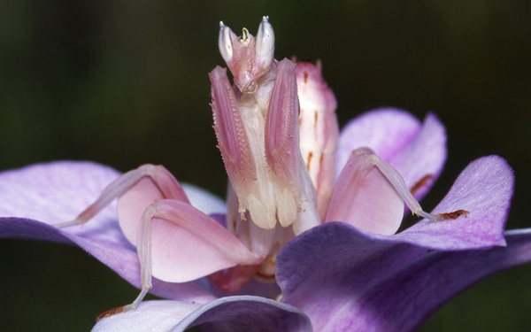

El camuflaje y el mimetismo son estrategias fascinantes utilizadas por muchos organismos en la naturaleza para sobrevivir. El mimetismo implica que un organismo imite a otro organismo, a menudo para evitar la depredación.
Un ejemplo de esto puede ser La Mantis Orquidea
La mantis orquídea, cuyo nombre científico es Hymenopus coronatus, es un insecto fascinante conocido por su impresionante camuflaje y apariencia única que se asemeja a las flores de orquídea. Aquí tienes algunos datos interesantes sobre esta especie:
La mantis orquídea tiene un cuerpo que imita a una flor de orquídea. Sus patas tienen lóbulos que se asemejan a pétalos de flores, lo que les permite mezclarse perfectamente con su entorno floral. Color: Su color puede variar entre blanco, rosa, amarillo y púrpura, dependiendo del entorno y la edad del insecto. Este cambio de color les ayuda a camuflarse entre las flores. Tamaño: Las hembras son significativamente más grandes que los machos. Las hembras pueden alcanzar hasta 6-7 cm de longitud, mientras que los machos suelen medir alrededor de 2.5-3 cm.
La mantis orquídea es una depredadora eficaz. Utiliza su camuflaje para acechar a sus presas, que suelen ser otros insectos polinizadores como abejas, mariposas y polillas, que se sienten atraídos por su apariencia floral.
